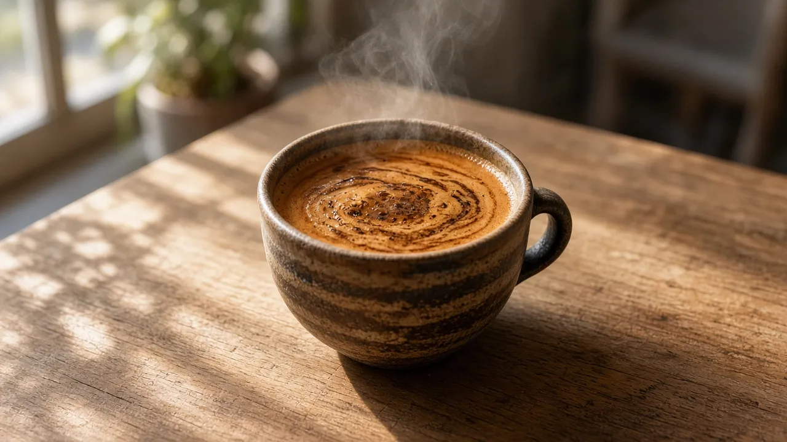

01/10KirscheHuila, Kolumbien · 2°01′N 75°56′W
Alles beginnt rot.
In 1.850 Metern Höhe reift die Kirsche neun Monate lang. Kühle Nächte, langsame Süße.
Höhe über dem Meer
0m
Reifezeit
0Monate
Demo-Projekt von PROJEKT EX, fiktive Marke · ← Zurück zu PROJEKT EX
ALMA Rösterei, Leipzig-Plagwitz: zehn Etappen von der Kirsche in Huila bis in Ihre Tasse. Scrollen Sie, die Kamera bleibt dran.
01/10KirscheHuila, Kolumbien · 2°01′N 75°56′W
In 1.850 Metern Höhe reift die Kirsche neun Monate lang. Kühle Nächte, langsame Süße.
Höhe über dem Meer
0m
Reifezeit
0Monate
02/10ErnteFinca Alta · Pflücksaison März
Von Hand gepflückt, Strauch für Strauch, in drei Durchgängen pro Saison. Grüne Kirschen bleiben hängen.
Reifegrad der Ernte
0%
Durchgänge pro Saison
0× gepflückt
03/10Auf dem BandBeneficio · Nassaufbereitung
Entpulpt, gewaschen, achtzehn Tage auf Hochbeeten getrocknet. Was bleibt, ist die grüne Rohbohne.
Restfeuchte
60%
Trocknung
0Tage
04/10SortiertSiebung · Dichte · Auge
Drei Siebe, ein Dichtetisch und zwei Hände. Gebrochene und dunkle Bohnen fallen seitlich ab.
Aussortiert
0%
05/10In JuteLager Pitalito · Charge HU-0617
Siebzig Kilo, von Hand vernäht und gestempelt. Die Charge bleibt bis Leipzig für sich.
Gewicht je Sack
0kg
Stempel
06/10Richtung HafenHuila → Cartagena · über die Anden
Im Lkw drei Tage bis Cartagena. Dort steigt der Sack in einen Container, der erst in Hamburg wieder aufgeht.
Route · Etappe 1
0km Landweg
07/10SchiffAtlantik · 21 Tage auf See
Kühl, trocken, unter Deck. Von Cartagena über den Atlantik nach Hamburg, dann mit der Bahn nach Leipzig.
Route · Etappe 2
0km gesamt
Auf See
0Tage
08/10RöstungSpeicherhof Leipzig · Trommel 15 kg
Aus grün wird gold, aus gold wird braun. Beim ersten Knacken bei 196 Grad entscheidet sich der Charakter.
Bohnentemperatur
20°C
00:00min
09/10MühleScheibenmahlwerk · 64 mm
Kurz vor dem Brühen geht die Bohne durchs Mahlwerk. Der Mahlgrad entscheidet über Klarheit und Körper.
Mahlgrad
1200µm
10/10TasseALMA Café · Plagwitz
Achtzehn Gramm, sechsunddreißig in der Tasse, 93 Grad. Zehntausend Kilometer, und jetzt: Ihr erster Schluck.
Bezug
0s
Rezept
18 g→36 g93 °C

Probierpaket, Abo oder Röstkurs: kommen Sie in den Speicherhof oder schreiben Sie uns.
Nachricht schreiben